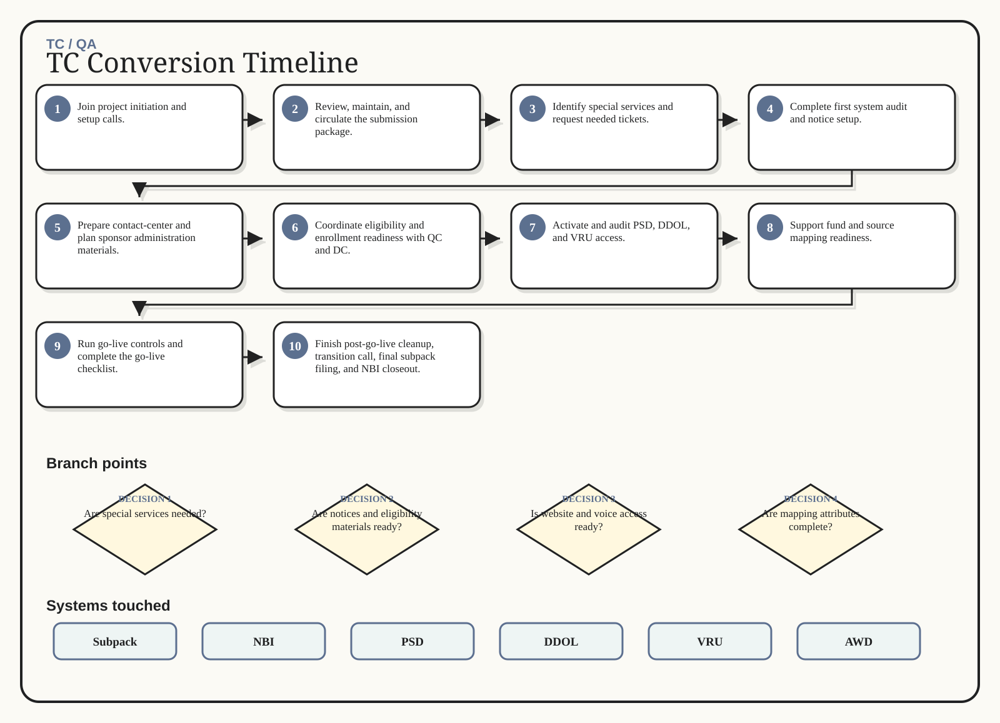

TC / QA / Excalidraw flow
TC Conversion Timeline
Track TC readiness from kickoff through closeout.
1Join project initiation and setup calls.
2Review, maintain, and circulate the submission package.
3Identify special services and request needed tickets.
4Complete first system audit and notice setup.
5Prepare contact-center and plan sponsor administration materials.
6Coordinate eligibility and enrollment readiness with QC and DC.
7Activate and audit PSD, DDOL, and VRU access.
8Support fund and source mapping readiness.
9Run go-live controls and complete the go-live checklist.
10Finish post-go-live cleanup, transition call, final subpack filing, and NBI closeout.
Generated whiteboard
Multi-branch visual route

Branch map
Decisions that change the route
1
Are special services needed?
2
Are notices and eligibility materials ready?
3
Is website and voice access ready?
4
Are mapping attributes complete?
5
Is the plan ready for go-live controls and closeout?
Swimlane
Inputs -> action -> output
Input
Action
Output
Project initiation details
Submission package
Special-service needs
Notice setup
Join project initiation and setup calls.
Review, maintain, and circulate the submission package.
Identify special services and request needed tickets.
Complete first system audit and notice setup.
Updated subpack
Special-service tickets
Notice/audit evidence
PSD/DDOL/VRU readiness
System boxes
Where the work happens
Subpack
NBI
PSD
DDOL
VRU
AWD
Sticky notes
Do not miss these
Done means done